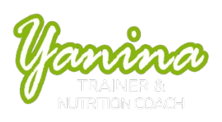

▶
Sentadilla a banco
Video demostrativo, puntos de postura y adaptación según rodillas.

Esto es un demo
Experiencia digital - entrenamiento personal
Una experiencia personalizada para quienes entrenan presencial y online: rutinas, videos, comentarios, evolución, mediciones y seguimiento entre clases.
Esta es tu guía para hoy. Entrenamiento de fuerza suave, movilidad y registro de sensaciones.
3 series · 12 repeticiones · descanso 45s
2 bloques · 40 segundos por lado
3 series · 15 repeticiones · controlando postura
El plan se adapta a tu modalidad: presencial, online o combinado.
Completado con buena energía.
Rutina de hoy con videos e indicaciones.
Preparado para cierre de semana.
Fortalecer piernas, mejorar movilidad y sostener constancia sin sobreexigencia. El progreso se mide por técnica, energía, asistencia y sensaciones.
Cada movimiento puede incluir video, foto, series, repeticiones y notas personalizadas.
Video demostrativo, puntos de postura y adaptación según rodillas.
Control escapular, respiración y ritmo sugerido por Yanina.
Versión progresiva para fortalecer sin dolor lumbar.
Una mirada simple y motivadora sobre evolución, constancia y bienestar.
Rutinas completadas en las últimas 4 semanas.
Seguimiento humano, ajustes y motivación sin perder el contacto personal.
Muy bien la constancia. Esta semana vamos a mantener carga y mejorar control en sentadilla. Recordá priorizar técnica antes que velocidad.
Noté mejor postura en el trabajo de espalda. Para el próximo bloque sumamos una variante de remo y bajamos impacto.
Hoy me sentí con más energía. La plancha me costó, pero pude completar las series.
Coloca tu registro y recibes feedback de tu entrenadora.
Me sentí con buena energía.
Esfuerzo percibido moderado.
Rodillas y espalda respondieron bien.
“La rutina se sintió posible. Me ayudó ver el video antes de empezar y saber qué tenía que cuidar.”
Indicación de Yanina
Hoy priorizamos técnica y recuperación. Si sentís carga en rodillas, reducí rango y mandame comentario después del entrenamiento.
Actualizado por Yanina · hace 2 hs